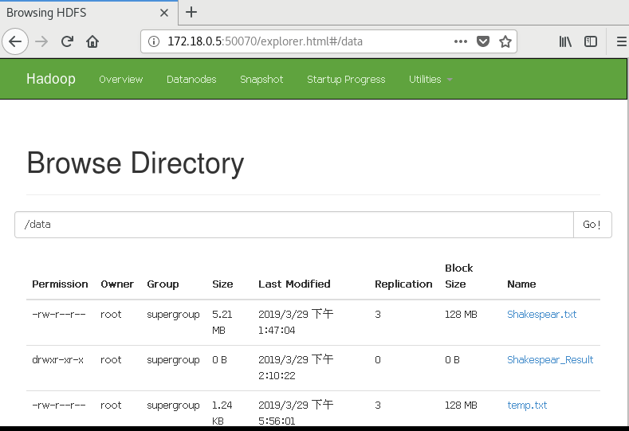
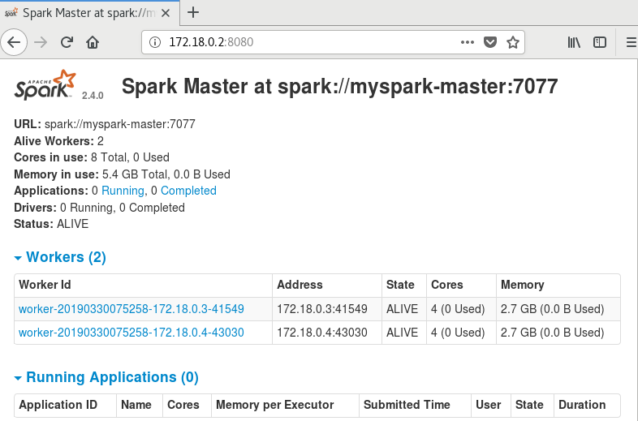
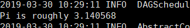
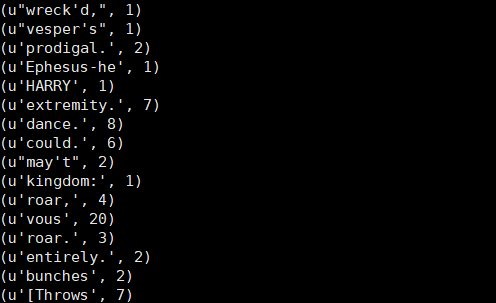
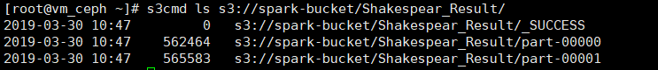
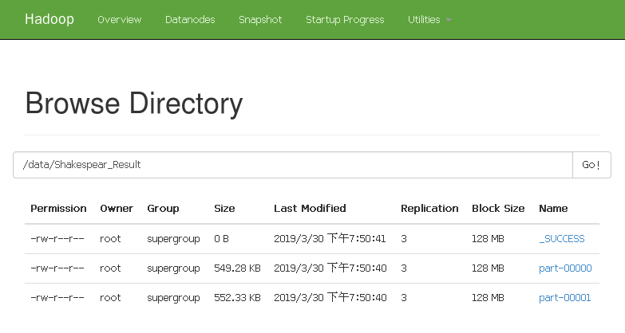
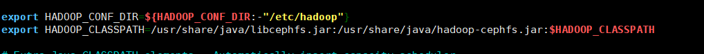

Welcome to Spark over Ceph’s documentation!¶
注解
实验是在Centos 7虚拟机的Docker中进行，Ceph, Hadoop, Spark均为容器应用,真机部署时可能需要更多配置，但流程类似。
1. Spark On Ceph： Why?¶
Spark和Hadoop都是主流的大数据处理平台， 两者都可以进行分布式计算任务，而且Spark既可以作为Hadoop的模块，任务通过Yarn提交在Hadoop集群中运行，也可以作为一个独立的解决方案直接在Spark集群中处理任务。Spark没有自己的文件管理功能， 这意味着在处理大数据任务时必须依赖某种存储解决方案（也可以直接从本地文件系统读取），例如HDFS，HBase，NFS，S3等。由于Spark在内存中处理一切数据，相对于Hadoop来讲，性能更强，处理速度更快， 成本更低，关于两者更多的信息可以参考 http://hadoop.apache.org/ 和 https://spark.apache.org/ 。
将Ceph与Spark结合的初衷是为了解决数据孤岛问题。通常，每个单独的分析群集通常都有自己的非共享HDFS数据存储，为了提供跨孤岛的相同数据集的访问，数据平台团队经常在HDFS孤岛之间复制数据集， 试图使它们保持一致和最新，这样做的结果就是公司最终维护了许多独立的固定分析集群，成本高昂。AWS生态系统通过Hadoop S3A文件系统客户端提供了对象存储方案，Spark和Hadoop都可以直接面向共享S3对象存储中的数据进行查询或提交任务，Ceph是排名第一的开源私有云对象存储平台，提供与S3兼容的对象存储，自然成为首选方案。详情请参考 https://www.redhat.com/en/blog/why-spark-ceph-part-1-3，https://www.redhat.com/en/blog/why-spark-ceph-part-2-3，https://www.redhat.com/en/blog/why-spark-ceph-part-3-3
2. Spark On Ceph： How?¶
实际上Spark并不能与Ceph分布式存储系统直接结合，因此只能通过某种桥梁将Spark与Ceph结合起来。参考这里 ，在这份材料里，提到了三种解决方案，分别是：RGWFS， CephFS-Hadoop， 以及S3 gateway endpoint。实际上由于RGWFS方案复杂，没有更多的细节，甚至项目地址已经不存在了。CephFS-Hadoop技术方案虽可行，Spark可以通过HDFS来对CephFS进行数据读写，但Ceph官方也没有随版本迭代而进行维护（过时的文档），而且数据读取速率低下。虽然本次实验会尝试实现后两种方案，但实际上第三种方案或许会成为首选。
3. Docker的安装¶
实验都在docker环境中进行，首先需要安装docker环境。在CentOS 7中的docker的安装不在此处说明，请参考菜鸟教程。实验需要使用的镜像可以通过下面的命令获得。
docker pull ceph/deamon:latest-mimic
docker pull bde2020/hadoop-namenode:2.0.0-hadoop2.7.4-java8
docker pull bde2020/hadoop-datanode:2.0.0-hadoop2.7.4-java8
docker pull bde2020/spark-master:2.4.0-hadoop2.7
docker pull bde2020/spark-master:2.4.0-hadoop2.7
注解
值得说明的是，除了ceph为必须项之外，根据具体实验需求获取镜像，比如只需要做spark访问s3就不需要安装hadoop集群。需要注意安装的顺序。
4. Ceph的安装及配置¶
本节参考基于Docker部署ceph分布式文件系统并且这里部署的是单机版。在开始之前需要给虚拟机挂载一块新磁盘作为ceph的osd。即dev/sdb > osd。虚拟机ip为192.168.184.164
a. 创建配置文件夹并授权¶
cd ~
mkdir ceph
mkdir ceph/{admin,etc,lib,logs}
chown -R 167:167 ~/ceph/
b. 创建mon, mgr, osd, mgr, mds安装脚本并执行¶
#!/bin/bash
# pwd: ~/run_mon.sh
docker run -d --net=host \
--name=mon \
--restart=always \
-v /etc/localtime:/etc/localtime \
-v ~/ceph/etc:/etc/ceph \
-v ~/ceph/lib:/var/lib/ceph \
-v ~/ceph/logs:/var/log/ceph \
-e MON_IP=192.168.184.164 \
-e CEPH_PUBLIC_NETWORK=192.168.184.0/24 \
ceph/daemon:latest-mimic mon
#!/bin/bash
# pwd: ~/run_mgr.sh
docker run -d --net=host \
--name=mgr \
--restart=always \
--privileged=true \
-v /etc/localtime:/etc/localtime \
-v ~/ceph/etc:/etc/ceph \
-v ~/ceph/lib:/var/lib/ceph \
-v ~/ceph/logs:/var/log/ceph \
ceph/daemon:latest-mimic mgr
#!/bin/bash
# pwd: ~/run_osd.sh
docker run -d --net=host \
--name=osd \
--restart=always \
--privileged=true \
--pid=host \
-v /etc/localtime:/etc/localtime \
-v ~/ceph/etc:/etc/ceph \
-v ~/ceph/lib:/var/lib/ceph \
-v ~/ceph/logs:/var/log/ceph \
-v /dev/:/dev/ \
-e OSD_DEVICE=/dev/sdb \
ceph/daemon:latest-mimic osd_ceph_disk
#!/bin/bash
# pwd: ~/run_rgw.sh
docker run -d \
--net=host \
--name=rgw \
--restart=always \
--privileged=true \
-v /etc/localtime:/etc/localtime \
-v ~/ceph/etc:/etc/ceph \
-v ~/ceph/lib:/var/lib/ceph \
-v ~/ceph/logs:/var/log/ceph \
ceph/daemon:latest-mimic rgw
#!/bin/bash
# pwd: ~/run_mds.sh
# 如果不结合cephfs-hadoop可以跳过
docker run -d \
--net=host \
--name=mds \
--restart=always \
--privileged=true \
-v /etc/localtime:/etc/localtime \
-v ~/ceph/etc:/etc/ceph \
-v ~/ceph/lib/:/var/lib/ceph/ \
-v ~/ceph/logs/:/var/log/ceph/ \
-e CEPHFS_CREATE=0 \
-e CEPHFS_METADATA_POOL_PG=6 \
-e CEPHFS_DATA_POOL_PG=6 \
ceph/daemon:latest-mimic mds
c. ceph测试¶
- 安装好之后，调整~/ceph/etc/ceph.conf配置文件，如下所示。
[global] fsid = cb93f8f8-7712-4dd9-aade-0bc397cc106d mon initial members = vm_ceph mon host = 192.168.184.164 osd journal size = 1024 log file = /dev/null osd pool default size = 1 osd pool default min size = 1 osd pool default pg num = 6 osd pool default pgp num = 6 mon allow pool delete = true
- 创建S3账号，并采用s3cmd测试S3对象存储
# 创建S3账号 docker exec -it mon radosgw-admin user create --uid="spark" --display-name="spark user" # 输出结果，记录如下账号信息 # "keys": [ # { # "user": "spark", # "access_key": "GNM6UQ2A5H2JUNQ96APA", # "secret_key": "9pDusNV9x1ZDan84HNLYdx6COBrhpr5k1uuimJkR" # } # ] # 安装s3cmd cd ~ pip install s3cmd # 对~/.s3cfg配置完成后测试S3存储，注意禁用https # 创建存储桶 s3cmd mb s3://spark-bucket # 上传本地数据文件 s3cmd put Shakespear.txt s3://spark-bucket/Shakespear.txt # 获取 s3cmd get s3://spark-bucket/Shakespear.txt # download: 's3://spark-bucket/Shakespear.txt' -> './Shakespear.txt' [1 of 1] # 5465394 of 5465394 100% in 0s 11.41 MB/s done
- 创建CephFS，可选。
#创建data pool docker exec -it mon ceph osd pool create cephfs_data 6 6 #创建metadata pool docker exec -it mon ceph osd pool create cephfs_metadata 6 6 #创建cephfs docker exec -it mon ceph fs new cephfs cephfs_metadata cephfs_data #查看信息 docker exec -it mon ceph fs ls # name: cephfs, metadata pool: cephfs_metadata, data pools: [cephfs_data ]
- 查看Ceph集群状态
docker exec -it mon ceph -s #输出 # cluster: # id: cb93f8f8-7712-4dd9-aade-0bc397cc106d # health: HEALTH_OK # # services: # mon: 1 daemons, quorum vm_ceph # mgr: vm_ceph(active) # mds: cephfs-1/1/1 up {0=vm_ceph=up:active} # osd: 1 osds: 1 up, 1 in # rgw: 1 daemon active # # data: # pools: 9 pools, 54 pgs # objects: 221 objects, 6.3 MiB # usage: 2.0 GiB used, 17 GiB / 19 GiB avail # pgs: 54 active+clean至此，Ceph单节点安装成功。
5. Hadoop的安装¶
注解
本节可选，如果只想做spark + S3完全可以跳过此节。另外考虑到容器之间的通信方式，这里采用这里采用了自定义网络ceph_spark和external_links的方式。
1. 这里使用docker-compose编排工具安装hadoop集群。为了方便后期容器间的通信， 这里首先自定义了一个网络ceph_spark:
docker network create ceph_spark docker network ls # 输出信息 # 344f383aab50 bridge bridge local # 0e03c96295d5 ceph_spark bridge local # 7cd69ff99a9f hadoopcompose_default bridge local # 8fc29fd140ad host host local # 749630064a6c none null local # 605130cf9434 root_default bridge local
- docker-compose搭建hadoop集群
# 安装docker-compose yum install docker-compose docker-compose up -d其中docker-compose.yml的内容为：
version: "2" services: mynamenode: image: bde2020/hadoop-namenode:2.0.0-hadoop2.7.4-java8 container_name: mynamenode volumes: - hadoop_mynamenode:/hadoop/dfs/name environment: - CLUSTER_NAME=myhadoop env_file: - ./hadoop.env networks: - ceph_spark ports: - "9996:50070" external_links: - mon mydatanode1: image: bde2020/hadoop-datanode:2.0.0-hadoop2.7.4-java8 container_name: mydatanode1 depends_on: - mynamenode volumes: - hadoop_mydatanode1:/hadoop/dfs/data networks: - ceph_spark env_file: - ./hadoop.env external_links: - mon mydatanode2: image: bde2020/hadoop-datanode:2.0.0-hadoop2.7.4-java8 container_name: mydatanode2 depends_on: - mynamenode networks: - ceph_spark volumes: - hadoop_mydatanode2:/hadoop/dfs/data env_file: - ./hadoop.env external_links: - mon volumes: hadoop_mynamenode: hadoop_mydatanode1: hadoop_mydatanode2: networks: ceph_spark: external: true同目录下的hadoop.env
CORE_CONF_fs_defaultFS=hdfs://mynamenode:8020 CORE_CONF_hadoop_http_staticuser_user=root CORE_CONF_hadoop_proxyuser_hue_hosts=* CORE_CONF_hadoop_proxyuser_hue_groups=* HDFS_CONF_dfs_webhdfs_enabled=true HDFS_CONF_dfs_permissions_enabled=false YARN_CONF_yarn_log___aggregation___enable=true YARN_CONF_yarn_resourcemanager_recovery_enabled=true YARN_CONF_yarn_resourcemanager_store_class=org.apache.hadoop.yarn.server.resourcemanager.recovery.FileSystemRMStateStore YARN_CONF_yarn_resourcemanager_fs_state___store_uri=/rmstate YARN_CONF_yarn_nodemanager_remote___app___log___dir=/app-logs YARN_CONF_yarn_log_server_url=http://historyserver:8188/applicationhistory/logs/ YARN_CONF_yarn_timeline___service_enabled=true YARN_CONF_yarn_timeline___service_generic___application___history_enabled=true YARN_CONF_yarn_resourcemanager_system___metrics___publisher_enabled=true YARN_CONF_yarn_resourcemanager_hostname=resourcemanager YARN_CONF_yarn_timeline___service_hostname=historyserver YARN_CONF_yarn_resourcemanager_address=resourcemanager:8032 YARN_CONF_yarn_resourcemanager_scheduler_address=resourcemanager:8030 YARN_CONF_yarn_resourcemanager_resource___tracker_address=resourcemanager:8031
- 进入mynamenode测试hdfs
#将测试数据拷入mynamenode内 docker cp ~/Shakespear.txt mynamenode:/root docker exec -it mynamenode /bin/bash # 进入mynamenode后的命令 cd /root hdfs dfs -mkdir /data hdfs dfs -put Shakespear.txt /data/通过浏览器查看:

6. Spark的安装¶
Spark集群将有一个master节点和两个worker节点组成。和hadoop的安装方式相同，这里依然采用docker-compose，文件内容如下：
version: '2' myspark-master: image: bde2020/spark-master:2.4.0-hadoop2.7 container_name: myspark-master hostname: myspark-master networks: - ceph_spark ports: - "4040:4040" - "8042:8042" - "7077:7077" - "8080:8080" - "8088:8088" external_links: - rgw - mynamenode - mydatanode1 - mydatanode2 restart: always environment: - INIT_DAEMON_STEP=setup_spark - "constraint:node==myspark-master" myspark-worker1: image: bde2020/spark-worker:2.4.0-hadoop2.7 container_name: myspark-worker1 hostname: myworker1 depends_on: - myspark-master networks: - ceph_spark ports: - "8081:8081" external_links: - rgw - mynamenode - mydatanode1 - mydatanode2 restart: always environment: - "SPARK_MASTER=spark://myspark-master:7077" - "constraint:node==myworker1" myspark-worker2: image: bde2020/spark-worker:2.4.0-hadoop2.7 container_name: myspark-worker2 hostname: myworker2 depends_on: - myspark-master networks: - ceph_spark ports: - "8082:8082" external_links: - rgw - mynamenode - mydatanode1 - mydatanode2 restart: always environment: - "SPARK_MASTER=spark://myspark-master:7077" - "constraint:node==myworker2" networks: ceph_spark: external: true安装好后在浏览器查看Spark集群：

7. 在Spark中使用Ceph¶
本节中首先会计算pi值来测试spark集群是否能够正常工作，然后通过统计Shakespeare作品的单词次数程序案例来使用Spark和Ceph。前提工作需要在spark集群各个节点安装pyspark，命令如下：
pip install pyspark -i https://pypi.tuna.tsinghua.edu.cn/simple/
a. spark集群测试¶
提交任务:
/spark/bin/spark-submit --master spark://172.18.0.2:7077 test_spark_run_pi.py其中test_spark_run_pi.py:
from __future__ import print_function import sys from random import random from operator import add from pyspark.sql import SparkSession if __name__ == "__main__": """ Usage: pi [partitions] """ spark = SparkSession\ .builder\ .appName("PythonPi")\ .getOrCreate() partitions = int(sys.argv[1]) if len(sys.argv) > 1 else 2 n = 10000000 * partitions def f(_): x = random() * 2 - 1 y = random() * 2 - 1 return 1 if x ** 2 + y ** 2 <= 1 else 0 count = spark.sparkContext.parallelize(range(1, n + 1), partitions).map(f).reduce(add) print("Pi is roughly %f" % (4.0 * count / n)) spark.stop()输出结果如下，表明spark集群能够正常工作

b. 使用S3¶
使用S3需要aws-java-sdk.jar 和hadoop-aws-2.7.3.jar 。提交任务：
/spark/bin/spark-submit --jars aws-java-sdk-1.7.4.jar,hadoop-aws-2.7.3.jar --master spark://172.18.0.2:7077 wordcount_s3.py# wordcount_s3.py from __future__ import print_function from pyspark import SparkContext from pyspark.sql import SparkSession spark = SparkSession\ .builder\ .appName("WordsCount")\ .getOrCreate() sc = spark.sparkContext input_s3_path = r"s3a://spark-bucket/Shakespear.txt" output_s3_path = r"s3a://spark-bucket/Shakespear_Result" sc._jsc.hadoopConfiguration().set("fs.s3a.access.key", "GNM6UQ2A5H2JUNQ96APA") # 之前的账号信息 sc._jsc.hadoopConfiguration().set("fs.s3a.secret.key", "9pDusNV9x1ZDan84HNLYdx6COBrhpr5k1uuimJkR") sc._jsc.hadoopConfiguration().set("fs.s3a.endpoint", "http://192.168.184.164:7480") # ceph rgw input = sc.textFile(input_s3_path) words = input.flatMap(lambda line: line.split(' ')) counts = words.map(lambda word: (word, 1)).reduceByKey(lambda x, y: x + y) for d in counts.collect(): print(d) counts.saveAsTextFile(output_s3_path)结果如下图所示，可以看到利用S3能够成功读取:
并且已经将数据存储到Ceph当中，到此S3 gateway endpoint方案成功运行：

c. 使用hadoop-cephfs¶
1). Spark + HDFS¶
spark最初就是从hdfs中存储数据的，同样先测试spark读取hdfs:
/spark/bin/spark-submit --master spark://172.18.0.2:7077 wordcount_hdfs.py# wordcount_hdfs.py from __future__ import print_function from pyspark import SparkContext from pyspark.sql import SparkSession spark = SparkSession\ .builder\ .appName("WordsCount")\ .getOrCreate() sc = spark.sparkContext input_hdfs_path = 'hdfs://mynamenode/data/Shakespear.txt' output_hdfs_path = 'hdfs://mynamenode/data/Shakespear_Result' input = sc.textFile(input_hdfs_path) words = input.flatMap(lambda line: line.split(' ')) counts = words.map(lambda word: (word, 1)).reduceByKey(lambda x, y: x + y) for d in counts.collect(): print(d) counts.saveAsTextFile(output_hdfs_path) spark.stop()运行结果如下图所示，结果也存入hdfs中:

2). Hadoop + CephFS¶
注解
Hadoop结合CephFS就是依然使用的是HDFS分布式文件系统，但是将数据存储在CephFS里面。由于hadoop集群的各个节点都是容器, 以及较新的的Ceph和hadoop版本，实际上本次Hadoop + CephFS是失败的（配置好之后数据依然存在hdfs里面而不是cephfs)。另外，S3对象存储相比，Hadoop + CephFS方案的数据访问速率是比较慢的，所以在实际部署时仍待商榷，记录Hadoop + CephFS只是做一个参考，参考文章 。
Hadoop + CephFS需要各个节点cephfs-java，libcephfs-jni-devel等相关插件的支持，插件可以通过配置ceph源安装或者直接下载编译（本次实验）。同时还需要hadoop-cephfs.jar。

各节点安装cephfs-java等插件插件并创建软连接：
docker exec -it mynamenode /bin/bash cd /opt/hadoop-2.7.4/lib/native/ ln -s /usr/lib64/libcephfs_jni.so .将hadoop-cephfs.jar添加到/usr/share/java目录：
docker exec -it mynamenode /bin/bash cd ~ cp hadoop-cephfs.jar /usr/share/java/修改Hadoop的运行环境配置文件/etc/hadoop/hadoop-env.sh，如图添加：
将ceph配置文件拷贝到各节点：
docker cp /root/ceph/etc/ceph.conf mynamenode:/root/ceph/ docker cp /root/ceph/etc/ceph.conf mydatanode1:/root/ceph/ docker cp /root/ceph/etc/ceph.conf mydatanode2:/root/ceph/ docker cp /root/ceph/etc/ceph.client.admin.keyring mynamenode:/root/ceph/ docker cp /root/ceph/etc/ceph.client.admin.keyring mydatanode1:/root/ceph/ docker cp /root/ceph/etc/ceph.client.admin.keyring mydatanode2:/root/ceph/修改hadoop配置/etc/hadoop/core-site.xml
<?xml version="1.0" encoding="UTF-8"?> <?xml-stylesheet type="text/xsl" href="configuration.xsl"?> <!-- Licensed under the Apache License, Version 2.0 (the "License"); you may not use this file except in compliance with the License. You may obtain a copy of the License at http://www.apache.org/licenses/LICENSE-2.0 Unless required by applicable law or agreed to in writing, software distributed under the License is distributed on an "AS IS" BASIS, WITHOUT WARRANTIES OR CONDITIONS OF ANY KIND, either express or implied. See the License for the specific language governing permissions and limitations under the License. See accompanying LICENSE file. --> <!-- Put site-specific property overrides in this file. --> <!-- file system properties --> <configuration> <property> <name>fs.defaultFS</name> <value>ceph://192.168.184.164/</value> </property> <property> <name>fs.ceph.impl</name> <value>org.apache.hadoop.fs.ceph.CephFileSystem</value> </property> <property> <name>ceph.conf.file</name> <value>/root/ceph/ceph.conf</value> </property> <property> <name>ceph.data.pools</name> <value>cephfs_data</value> </property> <property> <name>ceph.mon.address</name> <value>192.168.184.164:6789</value> <description>This is the primary monitor node IP address in our installation.</description> </property> <property> <name>ceph.auth.id</name> <value>admin</value> </property> <property> <name>ceph.auth.keyring</name> <value>/root/ceph/ceph.client.admin.keyring</value> </property> </configuration>重启Hadoop集群，正常情况下应该可以通过HDFS将文件存储至CephFS中。
docker restart mynamenode mydatanode1 mydatanode2 docker exec -it mynamenode /bin/bash # 上传测试 hdfs dfs -put test.txt /data/